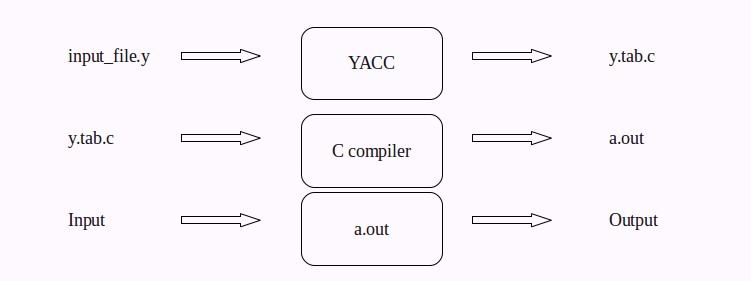
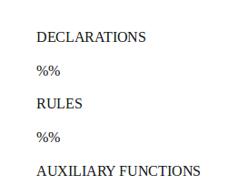

USING YACC
Introduction to YACC
YACC (Yet Another Compiler Compiler) is a tool used to generate a parser.
This document is a tutorial for the use of YACC to generate a parser for SIL.
YACC translates a given Context Free Grammar (CFG)
specifications (input in input_file.y) into a C implementation (y.tab.c) of
a corresponding push down automaton (i.e., a finite state machine with a stack).
This C program when compiled, yields an executable parser.

The source SIL program is fed as the input to the generated parser ( a.out ).
The parser checks whether the program satisfies the syntax specification given in the input_file.y file.
A parser is a program that checks whether its input (viewed as a stream of tokens) meets a given grammar specification. The syntax of SIL can be specified
using a Context Free Grammar. As mentioned earlier, YACC takes this specification and generates a parser for SIL.
Recall that a context free grammar is defined by a four tuple (N,T,P,S) - a set N of non-terminals,
a set T of terminals (in our project, these are the tokens returned by the lexical analyzer and hence we
may refer to them as tokens occasionally), set P of productions and a start variable S.
Each production consists of a non-terminal on the left side (head part) and a sequence of tokens and
non-terminals (of zero or more length) on the right side (body part).
For more about context free grammars refer to this wiki .
Example: This example is an
Infix to Postfix converter implemented using YACC. The rules part of the YACC program has been shown below:
start: expr '\n' {exit(1);}
;
expr: expr '+' expr {printf("+ ");}
| expr '*' expr {printf("* ");}
| '(' expr ')'
| DIGIT {printf("NUM%d ",pos);}
;
In this example, the set of non-terminals N = {start, expr}, the set of terminals
T = {'\n', '+', '*', '(', ')' , DIGIT } and the start symbol S = start.
Sample Input/Output :
When the input 1+5 is given to the parser (object file)
generated by YACC , the parser prints a postfix form of the
original expression 1+5 as NUM1 NUM2 + where, NUM1 represents
the first number in
the input expression i.e. 1 and NUM2 represents
the second number in the input expression i.e. 5.
I: 3+(1*9)+5
O: NUM1 NUM2 NUM3 * NUM4 + +
I: 5$
O: NUM1 error
This example demonstrates the specification of rules in YACC.
In this example there are five rules. Each rule has a production part and an action part .
The action part consists of C statements enclosed within a { and }.
Each production part has a head and a body separated by a ':'. For example, the first rule
above has production part with start as the head and expr '\n' as the body.
The action part for the rule is {exit(1);} .
The parser reads the input sequentially
and tries to find a pattern match with the body part of each production.
When it finds a matching production,
the action part of the corresponding rule is executed.
The process is repeated till the end of the input.
In the above example, when the input 1+5 is given to the parser,
it attempts to match the input with the body of the production of the first rule.
When the input has been parsed completely and correctly matched with the start production start: expr '\n' the
parser executes the action exit(1);. The statements printf("NUM "); and printf("+ ");
are executed as result of the input being matched with the productions expr: DIGIT and
expr: expr '+' expr respectively.
If the parser fails to find any matching body part, it invokes a special yyerror() function.
In our example, the yyerror() function is programmed to print the message “error”.
The structure of YACC programs
A YACC program consists of three sections: Declarations, Rules and Auxiliary functions.
(Note the similarity with the structure of LEX programs).

2.1 Declarations
The declarations section consists of two parts, declarations and YACC declarations .
The C Declarations are delimited by %{ and %}.
This part consists of all the declarations required for the C
code you write in the Actions section and the Auxiliary functions section.
YACC copies the contents of this section into the generated y.tab.c file without any modification.
The following example shows an abstract outline of the structure of the declarations part of a YACC program:
Example :
/* Beginning of Declarations part */
%{ /* Beginning of C declarations */
%} /* End of C declarations */
/* Beginning of YACC declarations */
/* End of YACC declarations */
/* End of Declarations Part */
The YACC declarations part comprises of declarations of tokens (usually returned by the lexical analyzer).
The parser reads the tokens by invoking the function yylex() (To be discussed in detail later).
2.2 Rules
A rule in a YACC program comprises of two parts (i) the production part and (ii) the action part.
In this project, the syntax of SIL programming language will be specified in
the form of a context free grammar. A rule in YACC is of the form:
production_head : production_body {action in C } ;
The following example shows an abstract outline of the structure of the rules part of a YACC program:
%%
/* Rules Section begins here */
/* Rules Section ends here */
%%
The rules in our example can be found here [Link to Rules section in eg_in2post_no-att.y]
2.2.1 Productions
Each production consists of a production head and a production body.
Consider a production from our example [Link to productions of eg_in2post_no-att.y]:
The expr on the LHS of the : in the production is called the head of
the production and the expr '+' expr on the RHS of the : is called the body of the production.
In the above example, '+' is a terminal (token) and expr is a non-terminal. Users can name to a tokens.
(for instance we can give the name 'PLUS' to the token '+').
In such cases, the names must be defined in the declarations section.
(example) The head of a production is always a non-terminal.
Every non-terminal in the grammar must appear in the head part of at least one production.
2.2.2 Actions
The action part of a rule consists of C statements which are
executed when the input is matched with the body of a production. ([Link to Actions section of eg_in2post_no-att.y])
The y.tab.c file contains a function yyparse() which is an implementation (in C) of
a push down automaton. yyparse() is responsible for parsing the given input file.
The function yylex() is invoked by yyparse() to read tokens from the input file.
[Link to yylex() in eg_in2post_no-att.y].
Note that the yyparse() function is automatically generated by YACC in the y.tab.c file.
Although YACC declares yylex() in the y.tab.c file, it does not generate the definition for yylex() .
Hence the yylex() function definition has to be supplied by you (either directly by defining yylex() in
the auxiliary functions section or using a lexical analyzer generator like LEX).
Each invocation of yylex() must return the next token (from the input steam) to yyparse().
The action corresponding to a production is executed by yyparse() only after sufficient number of tokens
has been read (through repeated invocations of yylex()) to get a complete match with the body of the production.
Note that a non-terminal in the head part of a production may have one or more production bodies separated by a “|”.
Consider the non-terminal expr in our example [Link to body of expr in eg_in2post_no-att.y].
The non-terminal has four production bodies expr '+' expr , expr '*' expr , '(' expr ')' and DIGIT.
The first production body has an associated print action printf("+ "), [ add one more ] .
yyparse() executes the action only when the body expr '+' expr has been matched with the input.
The action part of a single production may have several statements of C code.
2.2.3 Auxiliary Functions
The Auxiliary functions section contains the definitions of three mandatory functions main(), yylex() and yyerror().
You may wish to add your own functions (depending on the the requirement for the application) in the y.tab.c file.
Such functions are written in the auxiliary functions section.
The main() [Link to main() in eg_in2post_no-att.y] function must invoke yyparse() to parse the input
The auxiliary functions section of our example [Link to Auxiliary functions section of eg_in2_post_no-att.y]
program uses no user defined functions. You will need to write your supporting functions later in this project.
expr: expr '+' expr {op_print('+');}
| expr '*' expr {op_print('*');}
| '(' expr ')'
| DIGIT {printf("NUM%d ",pos);}
;
%%
/*** Auxiliary functions part ***/
void op_print(char op)
{
if(op == '+')
printf(“PLUS ”);
else if(op == '*')
printf(“MUL ”);
}
yyerror()
{
printf("error");
return;
}
yylex()
{
int c;
c = getchar();
if(isdigit(c))
{
pos++;
return DIGIT;
}
return c;
}
main()
{
yyparse();
return 1;
}
Sample Input/Output:
When yyparse() matches the input 2+2 with the production body expr '+' expr, it executes the action op_print('+');
and as a result prints “PLUS” in place of '+' as per the definition of the user defined auxiliary function op_print().
A working introduction to shift-reduce parsing
YACC uses shift-reduce parsing methodology to parse the given input.
The shift-reduce parser is essentially a push down automaton. It consists of a finite state machine with a stack.
The stack is used to hold terminal and/or non-terminal symbols.
The following is a gentle introduction to shift-reduce parsing.
Take note of the following points before we proceed,
- 1. A shift-reduce parser is initialized in the following configuration.
STACK: $ I/P BUFFER: <Input to be parsed> $
The input to be parsed, which is a sequence of terminal symbols, is stored in an input buffer with '$' symbol
at the end (used as an end-marker). The stack is initialized to contain just the symbol '$'.
2.The parser works by repeatedly performing the following actions -
Read the next terminal symbol from the input and push it into the stack and removing it from the input.
This operation is called a shift. (The shift operation will be explained in detail later.)
Do some conditional operations on the stack. These operations are called reductions.
Not every iteration may involve reductions. (Reductions will be explained in detail later.)
Until an error is encountered or the input is successfully parsed.
Parsing ends successfully when the input buffer is
empty (except for the end-marker '$') and the stack contains nothing but the '$'
followed by the start symbol of the grammar.
Error condition occurs when the input does not belong
the language of the grammar and the parser detects the same. We will look at error conditions later.
Consider the following context free grammar. This will be used as a running example for this section.
(Production 1) expr : expr '+' expr
(Production 2) expr : expr '*' expr
(Production 3) | '(' expr ')'
(Production 4) | '0' | '1' | '2' | '3' | '4' | '5' | '6' | '7' | '8' | '9'
The terminal set is {+,*,(,),0,1,2,3,4,5,6,7,8,9}. The only non-terminal is 'expr'.
Production 4 is actually a collection of 10 productions. We refer them collectively with one production number for simplicity.
Let us consider parsing of the input 2+2*3 using this grammar.
When the parsing process begins, the contents of the stack and the input buffer would be as follows:
STACK: $ I/P BUFFER: 2 + 2 $
The contents of the stack and the contents of the input buffer together define the configuration of the parser.
On successful completion of parsing, the configuration would be:
STACK: $ expr I/P BUFFER: $
Note here that expr is the start variable of the parser's context free grammar. This is the accepting configuration.
At each step of parsing, the parser takes an action resulting in a configuration change.
A shift-reduce parser can take four possible parser-actions:
- 1. Shift is the parser-action of removing the next unread terminal from the input buffer and pushing it into the stack.
(The input terminal gets “shifted” to the stack).
- 2. Reduce is the parser-action of replacing one or more grammar symbols from the top of the stack that matches a body of a production,
with the corresponding production head. The contents on top of the stack which matches the right side of a production is called a handle.
The process of replacing a handle with the corresponding production head is called a reduction.
- 3. Accept is the parser-action indicating that the entire input has been parsed successfully.
The parser executes an accept action only if it reaches the accepting configuration – one in which
the input buffer is empty and the stack contains just the start variable followed by '$'.
Accepting configuration: STACK: $ <start_variable> I/P BUFFER: $
- 4. Error indicates that an error was encountered while parsing the input.
In our example, there is no error. We will see error conditions later.
The parser's Iteration Steps
After initialization, the parser executes the following algorithm.
Repeat
shift the next terminal from the input to the stack.
While there is a “valid” reduction
perform the reduction.
Until accepting configuration is reached.
At each step of parsing, the shift-reduce parser decides on an action depending on the configuration of the parser.
Several details are left out in this description.
For instance, what is a “valid reduction”, or what the error conditions are etc.
have not been specified. These are determined by the contents of a parsing table maintained by the parser and
we will not go into the details here.
Instead, we will try to see how the parser operates in the case of our running example.
(1)STACK: $ I/P BUFFER: 2 + 3 * ( 4 + 5 ) $
At this configuration, the parser executes a shift action i.e. 2 is pushed onto the stack resulting in the configuration:
(2)STACK: $ 2 I/P BUFFER: + 3 * ( 4+ 5 ) $
Now, the top of the stack matches the right side (body) of Production 4 i.e., the 2 on the stack is
the handle in this case and a reduction takes place replacing the handle with the production head expr.
(3)STACK: $ expr I/P BUFFER: + 3 * ( 4 + 5 ) $
As there is no further handles to perform reductions, the parser shifts the next terminal '+' from the input to the stack.
(4)STACK: $ expr + I/P BUFFER: 3 * ( 4 + 5 ) $
In the next iteration, as no reductions are possible, the parser again shifts the next input:
(5)STACK: $ expr + 3 I/P BUFFER: * ( 4 + 5 ) $
Now, the parser can apply Production 4 and reduce the handle '3' on the top of the stack to expr.
Thus the parser reduces by Production 4 and replaces '3' with expr.
(6)STACK: $ expr + expr I/P BUFFER: * ( 4 + 5 ) $
At this point there is a further reduction possible using Production 1.
However, the “valid” action here is not to perform the reduction, but shift the next input to the stack.
The reason being that '*' has higher precedence over '+'.
(similar issues occur with associativity of operators). Unless the parser is somehow is informed about
what the correct action is (shift/reduce), under every such situation, the correct precedence/associativity may not be respected. For the time being, it is sufficient to understand that there are ways by which the user can force the parser to act in the right way in most practical situations, particularly when using a parser generator like YACC. Hence we hide these issues for now and assume that the parser is somehow capable of finding the “valid” actions.
(Some more details on how this will be done will be explained in the later sections.) Hence, the next action is a shift.
(7)STACK: $ expr + expr * I/P BUFFER: ( 4 + 5 )$
In the next four iteration, the parser continuously shifts as there are no valid reductions. Hence the resultant configuration:
(8)STACK: $ expr + expr * ( 4 + 5 I/P BUFFER: ) $
Now, the handle “4+5” matches the body of production 1, hence the parser reduces by production 1.
(9)STACK: $ expr + expr * ( expr I/P BUFFER: ) $
The parser continues to iterate as the accepting configuration has not been reached.
In the next iteration, the parser shifts, as a result emptying the input buffer.
(10)STACK: $ expr + expr * ( expr ) I/P BUFFER: $
Now the parser reduces the handle “ ( expr ) ” by production 3,
(11)STACK: $ expr + expr * expr I/P BUFFER: $
In the next iteration, as yet another valid reduction is possible, the parser reduces by Production 2
(12)STACK: $ expr + expr I/P BUFFER: $
As the parser has not reached accepting configuration and there exists another handle top of the stack, the parser further reduces the entire contents of the stack,
i.e., the handle “expr + expr” with production 1 and thus puts the start symbol expr on the stack.
(13)STACK: $ expr I/P BUFFER: $
On reaching accepting configuration, the parser quits iterating.
Since the I/P BUFFER is empty and the stack contains only the start variable,
the parser executes an accept action, indicating that the input has been parsed successfully.
The following table summarizes the step-by-step change in the parser's configuration after each action taken by a shift reduce parser.
| STACK |
I/P BUFFER
|
PARSER-ACTION EXECUTED
|
|
2 + 3 * (4 + 5) $
|
_ |
| $2 |
+ 3 * ( 4 + 5 ) $
|
SHIFT |
| $expr |
+ 3 * ( 4 + 5 ) $ |
REDUCE |
$expr +
|
3 * ( 4 + 5 ) $ |
SHIFT |
$expr + 3
|
* ( 4 + 5 ) $ |
SHIFT |
$expr + expr
|
* ( 4 + 5) $
|
REDUCE |
$expr + expr *
|
( 4 + 5 ) $ |
SHIFT |
$expr + expr * (
|
4 + 5 ) $
|
SHIFT |
$expr + expr * ( 4
|
+ 5 ) $ |
SHIFT |
$expr + expr * ( expr
|
+ 5 ) $ |
REDUCE |
$expr + expr * ( expr +
|
5 ) $ |
SHIFT |
$expr + expr * ( expr + 5
|
) $
|
SHIFT |
$expr + expr * ( expr + expr
|
) $
|
REDUCE |
$expr + expr * ( expr
|
) $
|
REDUCE |
$expr + expr * ( expr )
|
$ |
SHIFT |
$expr + expr * expr
|
$ |
REDUCE |
$expr + expr
|
$ |
REDUCE |
| $expr |
$ |
REDUCE |
| $expr |
$ |
ACCEPT |
There are several variants of shift-reduce parsing like the LR(1),
SLR(1) and LALR(1) parsing methods. The notion of valid shift or a valid reduce
depends on the particular parsing method and can be fairly involved.
We will see how routine situations like precedence and associativity of operators can be easily handled when you are using YACC.
YACC uses an LALR(1) parsing method. (See ... References and links). An understanding of the general
principles of shift-reduce parsing at the level presented here will be sufficient for most of this project.
Infix to Postfix program
When yacc_file.y is fed to YACC, it generates a y.tab.c file.
When compiled, this program yields a parser. [Link to Introduction to Yacc].
The generated parser uses shift-reduce parsing to parse the given input.
Yacc copies the C declarations (in the Declaration section of input_file.y) and all
the auxiliary functions (in the Auxiliary functions section of input_file.y) directly into y.tab.c without any modification.
In addition to these, YACC generates the definition of yyparse() in y.tab.c.
It is important to understand that, y.tab.c contains the following :
The C declarations from the input_file.y file [Link to part in y.tab.c]
Generated yyparse() definition [Link to part in y.tab.c]
All the auxiliary functions from the input_file.y [Link to part in y.tab.c]
Recall our infix to postfix program [link]
Here is a Sample Input and Output:
I: 2+3*(4+5)
O: NUM1 NUM2 NUM3 NUM4 + * +
When the expression 2+3 is fed as the input to the generated parser,
the main() function in the auxiliary functions section invokes yyparse() as below: (The code for main() from the example is copied below)
main()
{
yyparse();
return 1;
}
As noted earlier, yyparse() invokes yylex() to read tokens from the input.
For example, when yylex() reads the input 2 and returns the token DIGIT (code of yylex() shown below)
yylex()
{
int c;
c = getchar();
if(isdigit(c)) /* Every time a number is found in the input stream,
yylex() increments pos and returns a token DIGIT */
{
pos++;
return DIGIT;
}
return c; /* If any character other than a number is found,
yylex() simply returns the character itself to yyparse() */
}
NOTE: As pos was initialized to 0, it holds the value 1 after returning the first DIGIT, 2 after returning the second DIGIT and so on.
yyparse() is the function that parses the given input using shift-reduce parsing.
When the reduction of a handle takes place, yyparse() executes the action
(specified in the action part of the rule) corresponding to the handle's production in the yacc program.
On successful parsing of the given input, yyparse() returns 0.
If yyparse() fails to parse the given input, it returns 1.
A generalized algorithm of yyparse() would look like:
Initialize the stack with the end-marker $
new_token = yylex() /* read the first token from the input */
while (true)
switch( parser_action(stack, new_token))
case 'reduce':
pop the handle from stack, replace it with the
head of the handle's production.Execute action
part in the yacc file corresponding to the handle's production
case 'shift':
push new_token into the stack.
new_token = yylex() /* read the next
token from the input */
case 'accept':
return 0
case 'error':
return 1
The following table summarizes the parsing process in every iteration of the above algorithm.
Input buffer
|
new_ token
|
parser_action() returns
|
Stack contents after parser-action
|
Action executed by yyparse()
|
Output |
| 1+2$ |
DIGIT |
_ |
_ |
_ |
_ |
| 1+2$ |
DIGIT |
SHIFT |
DIGIT $
|
_ |
_ |
| +2$ |
+ |
REDUCE |
expr $
|
printf("NUM%d", pos); |
NUM1 |
| +2$ |
+ |
SHIFT |
+ expr $
|
_ |
NUM1 |
| 2$ |
DIGIT |
SHIFT |
DIGIT + expr $
|
_ |
NUM1 |
| $ |
$ |
REDUCE |
expr + expr $
|
printf("NUM%d", pos); |
NUM1 NUM2
|
| $ |
$ |
REDUCE |
expr $
|
printf("+ ");
|
NUM1 NUM2 +
|
| $ |
$
|
ACCEPT |
expr $
|
_ |
NUM1 NUM2 +
|
CONFLICTS IN PARSING USING YACC
As noted earlier, YACC uses the shift-reduce parsing methodology. Conflicts arise when the parser is unable to make a decision on the action to execute.
These conflicts are practically of two-types: shift/reduce conflict and reduce/reduce conflict.
5.1 resolving shift/reduce conflicts
When the parser cannot decide whether to shift or to
reduce in a configuration where both the actions seem to be viable options.
Consider the following grammar:
expr : expr '+' expr
| '(' expr ')'
| '0' | '1' | '2' | '3' | '4' | '5' | '6' | '7' | '8' | '9'
;
When the above grammar is fed to YACC, it produces a warning as shown below
yacc: 1 shift/reduce conflict
Let us consider an example to demonstrate a shift-reduce conflict.
Consider an input of 1+2+3 to the parser generated by YACC for the above context free grammar.
The input can be interpreted as [1+2]+3 or 1+[2+3].
Case 1: When the parser reaches a configuration of:
STACK: $ expr+expr I/P BUFFER: +3 $
The parser can choose to reduce by reducing the handle expr+expr on top of the stack to expr.
Case 2: When the parser reaches the configuration as in Case 1, it could chose to shift instead of reduce, hence resulting in the configuration of:
STACK: $ expr+expr+expr I/P BUFFER: $
Now, the parser can reduce expr+expr on top of the stack to expr, following which the contents of the stack expr +expr can be reduced to the expr.
The parser faces a conflict on deciding between the shift and reduce actions. This conflict is called shift/reduce conflict.
If the parser chooses to reduce (like in Case 1), the input would be interpreted as [1+2]+3 (left associative). If the parser chooses to shift and reduce later on (like in Case 2), the input would be interpreted as 1+[2+3] (right associative). The difference is the interpretations is the associativity of of the '+' operator. As the + operator is left associative , hence we would want the input to be interpreted as (1+2)+3. This can be done by specifying the associativity of the token '+' using the YACC keyword %left in the Declarations section as shown below:
%left '+'
Once this had been done, when the parser faces a conflict it
refers to the declaration and decides to reduce since the token '+' has been declared left associative.
Tokens can be declared to be right associative or non-associative by using the YACC keywords %right and %nonassoc.
( Note: As an example, if you add the production exper -> expr < expr then declaring
% nonassoc <
makes the parser return a parser error on inputs like (a<b<c) ).
The conflict in our example arises because the grammar is an ambiguous. Note that, a shift-reduce parser cannot successfully parse ambiguous grammars. To overcome this difficulty, YACC offers certain features like the provision for specifying the associativity
(seen above) and precedence (to be seen below) that allows the use of certain ambiguous grammars.
Consider another ambiguous grammar:
expr: expr '+' expr
| expr '*' expr
| '(' expr ')'
| '0'|'1'|'2'|'3'|'4'|'5'|'6'|'7'|'8'|'9'
When fed to YACC, it produces a warning of
yacc: 4 shift/reduce conflicts.
In this case, we have two operators of the same associativity but of different precedence.
i.e., + and * both are left associative but, * has a
greater precedence as compared to +. The precedence of these operators can be specified as shown below:
%left '+' /* '+' is left associative */
%left '*' /* '*' is left associative and has higher precedence over '+' */
Here '*' gets higher precedence over '+' as it has been listed below the '+' operator.
The declarations for the associativity of operators must be made in increasing order of precedence, with operators declared in each line assuming higher precedence over those declared above.
If more than one tokens are listed on the same line, they will be assigned equal precedence.
%left '+' '-'
%left '*' '/'
here '*' and '/' have the same precedence ,but have higher precedence than '+' and '-'.
YACC resolves shift/reduce conflicts using the precedence and associativity declarations. YACC assigns precedence and associativity for a production as well. A handle's precedence and associativity is the precedence and associativity of
the last token (not non-terminal) in the handle.
When YACC encounters a shift/reduce conflict, it shifts if the token in
the input buffer has a greater precedence than the production of the handle on top of
the stack and reduces if the production of the handle on top of the stack has a higher
precedence than the token. If the production and the token have same precedence, it reduces
if the production corresponding to the handle is left associative and shifts if they are right associative.
(NOTE: If the production and token in such a case of equal
precedence occur and they both are non associative, YACC reports an error).
| STACK |
I/P BUFFER
|
PARSER-ACTION EXECUTED
|
|
2 + 3 * (4 + 5) $
|
_ |
| $2 |
+ 3 * ( 4 + 5 ) $
|
SHIFT |
| $expr |
+ 3 * ( 4 + 5 ) $ |
REDUCE |
$expr +
|
3 * ( 4 + 5 ) $ |
SHIFT |
$expr + 3
|
* ( 4 + 5 ) $ |
SHIFT |
$expr + expr
|
* ( 4 + 5) $
|
REDUCE |
At the last configuration of the above table,
The parser faces a shift reduce configuration. To resolve this the parser refers to the precedence declarations (Assuming precedence has been declared), and finds:
%left '+' '-'
%left '*' '/'
On finding that the '*' token has a greater precedence than '+', the parser chooses
to shift '*' instead of reducing the handle “expr + expr”. Recall, that a handle's precedence and associativity is the precedence and associativity of the last token in the handle. Hence, the handle “expr+expr” has the same precedence as its last token '+'. On comparing the precedence of “expr + expr” and '*', parser finds that '*' has a
greater precedence, and hence it decides to shift, resulting in the configuration:
$expr + expr
|
* ( 4 + 5) $
|
REDUCE |
And the parser continues to iterate till it reaches accept configuration.
NOTE: If the precedence and associativity declarations are not specified, YACC shifts by default to resolve a shift/reduce conflict.
5.2 reduce/reduce conflicts
When the parser cannot decide upon which of several possible reductions to make it faces a reduce/reduce conflict.
For example, consider the following grammar:
program : statement
| conditional
statement : if boolean then stmt else stmt
| stmt
conditional : if boolean then stmt else stmt
And the configuration to be:
STACK : $ if boolean then stmt else stmt
I/P BUFFER: $
The handle “if boolean then stmt else stmt” can be reduced using
statement : if boolean then stmt else stmt
or
conditional : if boolean then stmt else stmt
i.e., there are more than one possible reductions. The parser faces a conflict on deciding which of the several (two in this example) productions to reduce by. This conflict is called reduce/reduce conflict.
IMPORTANT NOTE: Reduce-reduce conflicts are bad to have in a grammar. They are indicative of the fact that your grammar is not properly designed. Always make it a point to modify the grammar so that there are no more reduce-reduce conflicts.
Passing values from the yylex() to yyparse().
The previous infix to postfix program prints the structure of the postfix expression and not the postfix expression itself.
For the parser to print the postfix expression it would need the value associated with every DIGIT token.
For example, the value associated with the token NUM in the first sample input/output is 2.
SAMPLE INPUT>> The value associated with a token is called an attribute of the token.
In the previous program, yylex() simply returns the token DIGIT to yyparse() and does not return
any value associated with it. In order to access the value of the token DIGIT, there must be some method
to return an attribute along with the token from yylex() to yyparse().
This can be achieved using a variable called yylval. The following program demonstrates the use of yylval.
%{
#include <stdio.h>
%}
%token DIGIT
%%
start : expr '\n' {printf("\nComplete");exit(1);}
;
expr: expr '+' expr {printf("+ ");}
| expr '*' expr {printf("* ");}
| '(' expr ')'
| DIGIT {printf("%d ",$1);}
;
%%
yyerror()
{
printf("Error");
}
yylex()
{
int c;
c = getchar();
if(isdigit(c))
{
yylval = c - '0';
return DIGIT;
}
return c;
}
main()
{
yyparse();
return 1;
}
Sample Input/Output
I: 1+2*3
O: 1 2 3 * +
I: (2+7)*4
O: 2 7 + 4 *
When yylex() recgonizes a token, the variable yylval can be used to store the attribute value of the token. yylval is
a global variable of the type YYSTYPE declared in y.tab.c.
By default, YYSTYPE is of the type int. This is evident from the following code segment found in y.tab.c
As a result, yylval (which is originally of the type YYSTYPE), has an inferred type int.
It is used to return additional information about the lexeme found
to the parser i.e., yylval is used to return an attribute in addition to the token to the parser.
In the above example, the yylex() returns the token DIGIT and the value of the token in the
following code segment under definition of yylex():
yylval = c - '0';
return DIGIT;
The attribute of a token (i.e., the value of yylval associated with the token when it was returned by yylex())
can be accessed in the action of a YACC rule using $i (where i is the position of the token in the body of a production).
Example :
expr: DIGIT {printf(“%d”,$1);}
The action prints the attribute associated with the token DIGIT obtained through $1.
YYSTYPE can be defined to be of any data type by the programmer. To return an attribute of a type other than int,yylval maybe overridden by a user defined yylval
in the auxiliary declarations section.